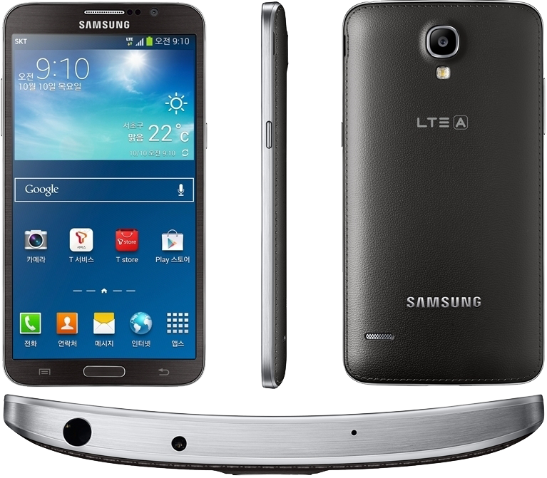

삼성 갤럭시 라운드
1. 외관

삼성전자가 2013년 10월 10일에 SK텔레콤을 통해 출시한 안드로이드 스마트폰.
2. 사양
| 프로세서 | 퀄컴 스냅드래곤 800 MSM8974 SoC. Qualcomm Krait 400 MP4 2.3 GHz CPU, 퀄컴 Adreno 330 GPU | ||
| 메모리 | 3 GB LPDDR3 SDRAM, 32 GB 내장 메모리, micro SDXC 및 exFAT (최대 64 GB 지원) | ||
| 디스플레이 |
5.7인치 FHD(1920 x 1080) 변종 Shadow Mask RG-BG 펜타일 서브픽셀 방식의 삼성D Full-HD Super Flexible AMOLED (387 ppi) 멀티터치 지원 정전식 터치 스크린 with 슈퍼 센서티브 터치[2], 고릴라 글래스 3 |
||
| 네트워크 | 기본 | LTE-2CA Cat.4, HSPA+ 42Mbps, HSDPA & HSUPA & UMTS, GSM & EDGE | Wi-Fi 802.11a/b/g/n/ac, 블루투스 4.0+BLE, NFC, 적외선 LED, MHL 2.0 |
| - | - | ||
| 카메라 | 전면 200만 화소, 후면 1,300만 화소 AF 및 LED 플래시 | ||
| 배터리 | Li-ion 2800 mAh 착탈식 | ||
| 운영체제 | 안드로이드 4.3 (Jelly Bean) → 4.4 (KitKat) | ||
| 규격 | 79.6 x 151.1 x 7.9 mm, 154 g | ||
3. 상세
세계 최초로 플렉시블 디스플레이를 탑재한 휴대폰.
갤럭시 노트 3가 공개된 직후부터 흘러나왔던 갤럭시 노트 3의 플렉시블 디스플레이 파생 모델 루머에 해당되는 기기로 보인다.
외관 디자인은 갤럭시 노트 3와 비슷하다. 뒷면 재질 역시 플라스틱 연금술이라 불리던 가죽느낌의 플라스틱으로 만들어졌다.
다만, S펜은 지원하지 않는다. 플렉시블 디스플레이를 탑재하여 가로로 휜 디자인을 차용했다.